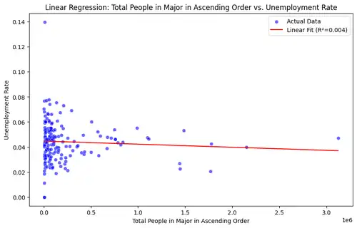
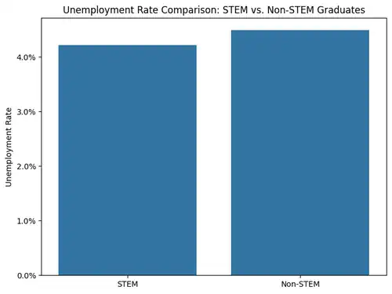

College Major Saturation & Unemployment Analysis
A four-person exploratory data analysis project investigating whether growth in college-major populations is associated with unemployment, and whether patterns differ between STEM and non-STEM fields.
- Python
- pandas
- NumPy
- Seaborn
- Matplotlib
- scikit-learn
- statsmodels
- EDA
- Regression
Business-style question
Our team asked whether an influx of students into specific college majors corresponded with higher unemployment rates, whether the relationship changed between STEM and non-STEM fields, and whether larger graduating populations were associated with tighter job markets.
Instead of assuming that a popular major automatically produces worse employment outcomes, we tested the relationship with descriptive statistics, visual exploration, simple linear regression, and multivariate OLS models.
Data & analytical approach
1. Prepare
Loaded FiveThirtyEight's all-ages and recent-graduates datasets, standardized column names, checked missing values, removed incomplete recent-graduate rows, and calculated normalized employment metrics.
2. Explore
Used distributions, category comparisons, scatter plots, and bar charts to investigate unemployment patterns across all majors, STEM fields, computer-related majors, and non-STEM groups.
3. Model
Built simple linear regression models with scikit-learn and OLS models with statsmodels, then expanded to multivariate regression using employment, salary, and graduate-count variables.
4. Interpret
Compared model fit and coefficients, challenged our initial hypothesis, documented limitations, and discussed ethical risks such as outdated cohorts, representation bias, and overgeneralization.
Selected project visuals
These charts are direct exports from our submitted Jupyter notebook, compressed to WebP for faster loading. They give a stakeholder a quick look at the exploratory analysis and regression work behind the conclusions.



Key findings
Major size alone was not a useful predictor of unemployment rate. The simple regression between total people in a major and unemployment rate produced an R² of approximately 0.004, meaning the model explained virtually none of the variation in unemployment rate.
Adding employment rate, salary measures, full-time employment, and salary percentiles improved the model to an R² of about 0.158, but the overall explanatory power remained limited. This led us to reject the simplistic idea that major popularity by itself explains unemployment outcomes.
Our exploratory comparison also showed differences between STEM and non-STEM categories, but the results varied substantially by field. The project reinforced that labor-market outcomes are influenced by multiple factors that are not captured by graduate counts alone.
Team collaboration & my contribution
This was a four-person project completed by Benjamin Mendoza, Teo Imoto-Tar, Ramon Guerrero, and Chloe Kim. We divided ownership of major stages while reviewing and editing one another's work before submission.
Data preparation
Teo Imoto-Tar and Benjamin Mendoza led data import and wrangling, preparing the datasets for analysis.
My role: EDA
I co-led exploratory data analysis with Chloe Kim, helping investigate distributions and relationships across STEM, computer-related, and non-STEM majors.
Analysis
Benjamin, Chloe, and I continued the EDA and began the regression analysis, with the group discussing and editing the analytical approach together.
Final synthesis
All four team members contributed to the final analysis, results, conclusion, discussion, and review of the completed project.
What I would bring to an analyst role
This project demonstrates more than chart creation. It shows how I approach an ambiguous question, evaluate data quality, segment a dataset, choose statistical methods, interpret model fit, communicate limitations, and collaborate with teammates who own different parts of the workflow.
One of the most useful lessons was learning to challenge the original hypothesis when the data did not support it. Rather than forcing a conclusion, we used the weak model fit to identify where the original definition of “oversaturation” was too simplistic and where additional variables would be needed.
Limitations & next steps
The recent-graduate dataset covers 2010–2012 cohorts, so it should not be treated as a description of today's labor market. Major population is also only a rough proxy for market saturation, and the datasets are aggregated rather than individual-level. A stronger follow-up would combine newer graduation data, job-opening demand, industry growth, geography, and time-series labor statistics.